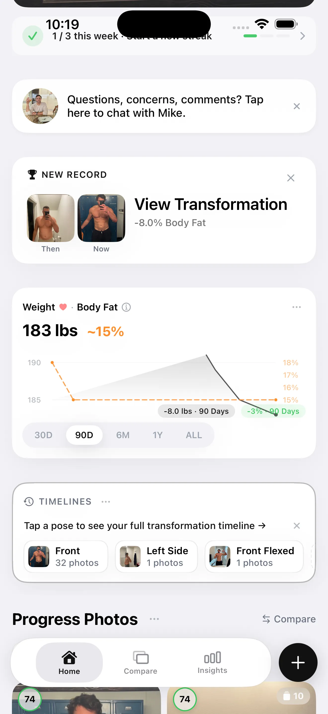

Here is the honest answer before the list: no smartphone app directly measures visceral fat. The only accurate methods are CT scan and MRI — both require medical equipment, a clinician, and significant cost. What the apps below actually do is estimate proxies for visceral fat accumulation: body fat percentage, abdominal fat distribution, BIA-based visceral fat ratings, or DEXA-measured android fat mass. All of these correlate with visceral fat. None of them measure it.
That distinction matters because marketing copy for most of these products glosses over it. This article doesn't. Here's what each approach actually gives you, ranked by how useful the data is for tracking visceral fat changes over time.
The Four Approaches to Visceral Fat Tracking
| Approach | What It Actually Measures | Accuracy for Visceral Fat | Best For |
|---|---|---|---|
| BIA smart scale app | Total body fat %, lean mass; some report a derived "visceral fat rating" | Moderate proxy; heavily influenced by hydration. ±3–5% body fat variance. | Daily habit tracking; simple trend data; those who want a single number |
| AI photo app | Body fat % estimated from visual body composition; subcutaneous fat changes visible directly | Moderate proxy for subcutaneous; indirect indicator of visceral. ±2–4% body fat variance. | Lifters and gym-goers who want visual progress + body fat % trend |
| DEXA service | Segmental body composition including android (abdominal) fat mass — best proxy for visceral fat outside a lab | Best available without CT/MRI. Android fat mass correlates strongly with visceral fat. | Anyone who wants clinical-grade body composition data; quarterly benchmarking |
| Manual measurement app | Waist circumference (you log it); the most direct free proxy for visceral fat trend | Strong proxy when measured consistently. Research-validated correlation with visceral adiposity. | Anyone; especially those who don't want to buy hardware |
1. BIA Smart Scale Apps — Best for Daily Habit Tracking
Bioelectrical impedance analysis (BIA) scales work by passing a low electrical current through the body and measuring how quickly it travels through different tissue types. Fat resists the current; water and lean mass conduct it. From this, the scale estimates total body fat percentage and lean mass. Some scales — particularly segmental models from Withings and Tanita — use multi-frequency BIA to produce a derived "visceral fat rating" or "visceral fat level."
This rating is not a direct visceral fat measurement. It's a model-derived estimate based on the BIA reading and your body dimensions. Research suggests these ratings correlate reasonably with actual visceral fat at the population level, but individual accuracy is limited — hydration, recent exercise, meal timing, and even foot calluses affect the reading. A visceral fat "level 7" one morning and "level 5" the next evening is not two real measurements; it's measurement noise.
The useful data from BIA scales is the long-term trend: if your visceral fat rating trends from 10 to 6 over six months, that's a meaningful signal even if each individual reading is noisy. Measure consistently — same time of day, same hydration state — and track the four-week average, not individual sessions.
Notable apps: Withings Health Mate (works with Withings Body Comp scale), Tanita app (works with Tanita BC-series scales), FitTrack app (works with FitTrack Dara scale). All iOS and Android.
2. AI Photo Apps — Best for Lifters Who Want Visual + Compositional Data

Photo-based body composition apps estimate body fat percentage from a visual assessment of body proportions and subcutaneous fat distribution. The AI model infers how much fat tissue is present based on what it can see in the image. What it can see is subcutaneous fat — the fat under the skin. What it cannot see is visceral fat, which is invisible in any photograph.
This honest limitation is also a genuine strength in a specific context: if you want to see and measure subcutaneous fat changes over time, AI photo analysis is significantly more sensitive than a scale. A scale conflates muscle gain, fat loss, and water shifts into a single number. A photo separates the signal — you can see where fat is leaving your body, which parts are leaning out, and how your proportions are changing, even when the scale doesn't move.

For visceral fat specifically: photo apps track the body fat percentage trend that indirectly reflects visceral fat reduction. When your overall body fat percentage falls — which photos confirm visually — visceral fat is almost certainly falling too, because both respond to the same caloric deficit and exercise interventions. The photo gives you the visual confirmation that the number reflects real compositional change, not just a hydration swing.
GainFrame (iOS) is the photo-based option built specifically for serious gym-goers. It estimates body fat %, FFMI, and 12 individual muscle group scores from each check-in photo, then tracks all three across time. It doesn't claim to measure visceral fat — it's honest about tracking what a photo can show.
3. DEXA Services — Best Accuracy Without a CT Scan
DEXA (Dual-energy X-ray absorptiometry) scans are the gold standard for body composition measurement available outside a research or clinical imaging lab. A full-body DEXA reports lean mass, fat mass, and bone density segmented by body region — trunk, arms, legs — and the android fat mass (abdominal region) correlates strongly with visceral fat volume in research populations.
DEXA doesn't directly isolate visceral from subcutaneous abdominal fat — that requires a CT or MRI. But the android fat mass reading and the android-to-gynoid ratio give you a more precise and clinically meaningful proxy than any BIA device.
Services like BodySpec (US-based, operates mobile DEXA vans in major cities) offer consumer-priced DEXA scans — typically $45–$75 — with an app that tracks results over time. One scan quarterly gives you clinical-grade benchmarking data that no scale or photo app can match. If you're managing visceral fat for health reasons and want real numbers, a quarterly DEXA is the highest-signal investment available.
Notable services: BodySpec (US, mobile DEXA), DexaFit (US, fixed locations), InsideTracker (includes DEXA + blood biomarker tracking). All provide apps or web dashboards for tracking results over time.
4. Manual Measurement Apps — Best Free Option
Waist circumference is the single best free proxy for visceral fat that any person can measure themselves. Research consistently shows that waist circumference correlates with visceral adiposity independently of total body weight — a large waist relative to height signals visceral fat accumulation even in people who aren't classically "obese" by BMI.
The thresholds most commonly cited in cardiovascular risk research: over 40 inches (102 cm) for men, over 35 inches (88 cm) for women, indicates elevated risk associated with visceral fat accumulation. These are not hard limits — they're population-level associations. But a shrinking waist circumference over months is strong evidence that visceral fat is being reduced, regardless of what your body fat percentage app says.
Any app that lets you log custom measurements — Apple Health, MyFitnessPal's custom measurements, or even a simple spreadsheet — works for this. The app isn't the tool; the tape measure is. Consistency in measurement location (same spot, same time of day, same level of exhalation) matters more than which app you use to log it.
Which One Is Right for You
| Your Situation | Best Approach |
|---|---|
| You lift regularly and want visual progress tracking alongside body composition data | AI photo app (GainFrame) + monthly waist measurement |
| You want a daily habit number to watch trend over months | BIA smart scale app (Withings, Tanita) — measure same time daily, track 4-week averages |
| You want the most accurate body composition data without a CT scan | Quarterly DEXA scan (BodySpec, DexaFit) — track android fat mass trend |
| You want the simplest, most reliable free option | Monthly waist circumference logged in any app — the best free proxy available |
| You already have a BIA scale and want to add visual context | Keep the scale for trend numbers, add photo check-ins for the visual layer the scale can't give you |